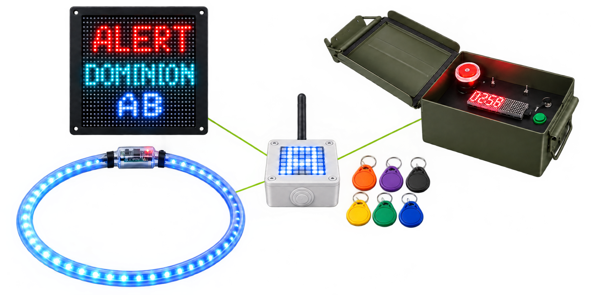
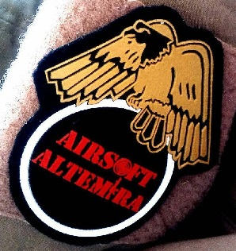
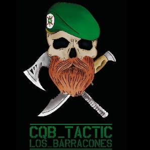
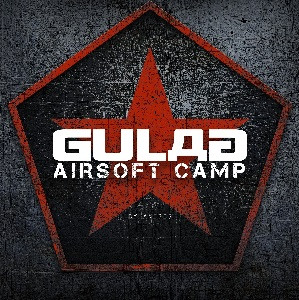
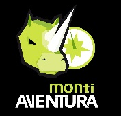

Los equipos toman zonas
Los jugadores disputan los nodos distribuidos por el campo y alternan su control durante la partida.
Dominion contabiliza el tiempo de captura de varias zonas y lo convierte en una puntuación en directo. Los equipos ven cómo evoluciona la partida mientras el personal del campo dispone de una herramienta clara para coordinarla.
Arenatec presenta Dominion como el primer panel de puntuación para airsoft basado en el tiempo de captura de distintas zonas.

Dominion convierte el control de zonas en una competición visible para los equipos y más fácil de seguir para el personal del campo.
Los jugadores disputan los nodos distribuidos por el campo y alternan su control durante la partida.
El sistema contabiliza el tiempo de control de cada equipo a través de las zonas de juego.
El Score hace visible la situación acumulada para que equipos y organización sigan el ritmo del juego.
Dominion combina una pantalla de puntuación, zonas de captura y señales luminosas para mostrar el estado del juego en el campo.

El panel de puntuaciones muestra los equipos y su progreso según el tiempo de captura acumulado en los nodos.

El Node corresponde a una zona capturable del campo. Dominion permite configurar hasta dieciséis zonas.
La luz circular del Beacon indica visualmente qué equipo tiene capturado el node asociado.

El Bomb S1 es un módulo integrado de Dominion que simula un dispositivo bomba y cumple la función de un llavero RFID. Cuando la cuenta atrás llega a cero, activa una potente alarma acústica y captura un Node. Robusta, simple y práctica, está pensada para que la partida se entienda sin grandes explicaciones en el briefing.
Dominion ofrece a los equipos una referencia compartida de la partida y ayuda al personal a coordinar los momentos de juego.




